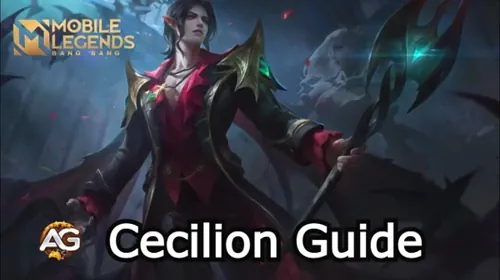

Strategy Guide on How to Play Cecilion in Mobile Legends: Bang Bang
Master Cecilion in Mobile Legends with this ultimate guide. Discover the best builds, emblems, skills, and strategies to unleash his full potential and dominate the late game.

Illustration of Cecilion with Skin Embrace of Night in Mobile Legends Bang Bang, a game developed by Moonton.
Hero Overview
Details
Function:
Mage
Gameplay Style:
Poke, Burst
Best Lane:
Mid
Damage Type:
Magic Damage
Difficulty to Play:
Medium
Best Game Stage:
Late Game
Win Rate:
52,98%
Pick rate
1,93%
Ban Rate:
3,91%
2024 Lane Tier List
Rank
Mid Lane Tier List:
A+
Gold Tier List:
C
Dominate Mobile Legends with Cecilion
Hello, gamers! In today’s article, we're diving deep into playing Cecilion, one of the most powerful Mages in Mobile Legends: Bang Bang. While Cecilion is often underestimated early in the game, he becomes an unstoppable force in the late game. His abilities scale heavily with his unique passive, allowing him to deal massive amounts of damage and eliminate squishy enemies in only a few hits.
This guide will cover everything you need to dominate with Cecilion, including his emblem, spell, skill build, items, and essential tips and tricks. Let’s jump right in!
1. Understanding Cecilion's Passive: Overflowing
Cecilion’s passive ability, Overflowing, is central to his power. Here’s what you need to know:
Extra Mana Gain: Every time Cecilion hits an enemy with one of his skills, he gains 10 additional maximum Mana and recovers 10 Mana. This has a 1-second cooldown.
Mana Scaling: As Cecilion’s skill damage scales with his maximum Mana, every additional stack makes his skills more powerful.
Early Game Strategy: In the early game, your primary goal is to build up as many stacks as possible. Use your first skill to start stacking from level 1, aiming to hit minions, jungle monsters, and enemy heroes to maximize your passive’s effect. By doing so, Cecilion becomes a powerhouse in the late game, boasting both high damage and high Mana regeneration.
2. Cecilion Skill Breakdown and Usage
First Skill: Bat Impact
Cecilion’s Bat Impact is his primary tool for damage and harassing enemies. Here’s how to use it effectively:
Skill Mechanics: This skill has a fixed cast range and creates a bat swarm that strikes enemies. Upon casting, Cecilion gains a small burst of movement speed.
Usage Tips: Maximize damage and range by positioning yourself to hit enemies at the skill’s landing point. Use the movement speed buff to chase or retreat as needed.
Mana Management: Casting Bat Impact costs Mana, so avoid using it excessively in quick succession to prevent running out of Mana for crucial moments.
Pro Tip: Cecilion’s early game power is relatively low. Use Bat Impact to poke and harass enemies to build stacks while staying safe from aggressive foes.
Second Skill: Sanguine Claws
Sanguine Claws is Cecilion’s secondary skill, which can root enemies and set up combos.
Wide Cast Range: Sanguine Claws covers a large area and can hit multiple enemies, making it ideal for checking bushes and zoning out opponents.
Combo Potential: Cast Sanguine Claws before using Bat Impact to reduce the chances of enemies escaping and increase your burst damage potential.
Ultimate Skill: Bats Feast
Bats Feast is Cecilion’s ultimate ability and a powerful AoE tool:
High Sustain and Damage: Cecilion launches bats in all directions, damaging enemies and restoring his HP based on the damage dealt.
Ideal for Team Fights: This skill is highly effective during team fights, allowing Cecilion to burst multiple enemies while staying alive.
Extra Ability: Moonlit Waltz
Cooldown: 45.0 seconds
The Moonlit Waltz is a unique extra ability that activates when Carmilla, Cecilion’s partner, is nearby. With this skill, Cecilion can summon Carmilla as a Vermil Shadow around him, granting him a shield and additional effects.
Shield Strength: Grants a shield of 520 to 800 points, scaling with Carmilla's level.
Additional Effect: Carmilla can choose to leave Cecilion and charge toward a target location, gaining an equal shield and dealing 520-800 Magic Damage (scaling with level) to nearby enemies. Additionally, she slows enemies by 30% for 1 second.
This ability adds another layer of survivability and offensive capability, making Cecilion and Carmilla a formidable duo when played together.
3. Ideal Item Build for Cecilion
A strong item build is essential to maximize Cecilion’s damage potential. Here’s a step-by-step item guide for dominating with him:
Early Game Items
Boots of Mana: Early Mana regeneration is critical, as Cecilion’s abilities require a lot of Mana.
Clock of Destiny: Provides 60 Magic Power, 400 HP, and 600 Mana, enhancing Cecilion’s passive and skill scaling.
Core Items
Wishing Lantern: Provides +75 Magic Power, +400 Mana, and +10% Cooldown Reduction, making it an excellent choice for boosting Cecilion’s damage and sustain. Unique Passive - Butterfly Goddess: Every 800 Magic Damage Cecilion deals to an enemy hero (before Damage Reduction), summons a Butterfly Goddess that attacks the enemy hero, dealing additional Magic Damage equal to 10% of their current HP. This passive effect significantly enhances Cecilion’s burst potential, especially against high-HP heroes.
Glowing Wand: Grants +75 Magic Power, +400 HP, and +5% Movement Speed, providing Cecilion with enhanced durability and mobility. Unique Passive - Scorch: When Cecilion deals Magic Damage, this passive burns the target for 3 seconds, inflicting extra Magic Damage equal to 1% of the target's Max HP per second. Unique Passive - Lifebane: Additionally, dealing damage reduces the target's Shield and HP Regen effects by 50% for 3 seconds, making it especially effective against heroes with high regene
Late Game Items
Divine Glaive: Provides significant Magic Penetration to break through enemies with high Magic Defense.
Lightning Truncheon: Adds burst potential with Magic Power and Mana synergy with Clock of Destiny.
Blood Wings or Defensive Item: Blood Wings add Magic Power and a shield. Alternatively, consider a defensive item based on the enemy lineup.
Cecilion with Top Global Build, Mobile Legends: Bang Bang
4. Choosing the Right Emblem and Battle Spell
Best Emblem Choice for Cecilion
Assassin Emblem: Provides adaptive penetration, increased movement speed, and enhanced attack speed, ideal for chasing and kiting.
Magic Emblem: For more Magic Power and cooldown reduction, the Magic Emblem can enhance Cecilion’s burst potential.
Flameshot Usage: Deals extra damage and provides finishing capability to low-HP enemies trying to escape.
5. Mid-Game Strategy: Securing Your Power Spike
As you reach the mid-game and secure two to four items, Cecilion’s damage output will start to shine. Here are essential tactics for maintaining your lead:
Positioning: Always stay at the backline of team fights, positioning behind your tank and damage dealers to avoid being targeted.
Prioritize Key Targets: Focus on hitting squishy heroes like Marksmen or Mages.
Avoid Assassins: Maintain distance from assassins like Lancelot, Hayabusa, Helcurt, and Harith, who can burst Cecilion quickly.
6. Late Game Dominance: Unleashing Full Power
In the late game, Cecilion’s potential peaks, and he becomes a top target for enemies due to his tremendous damage output. Here’s how to leverage your late-game power:
Stay Safe and Strategic: Keep a safe distance and kite back in team fights.
Prioritize Survivability: Consider items like Immortality for added durability in the late game.
Target Selection: Focus on low-mobility, squishy heroes who can be quickly eliminated.
Heroes to Avoid When Playing Cecilion
Certain heroes counter Cecilion effectively. Here’s a list of the main threats:
Lancelot: His high mobility and burst damage make it difficult for Cecilion to escape once engaged.
Hayabusa: As an assassin, he can easily dive into the backline and take down Cecilion with his powerful abilities.
Hellcurt: Hellcurt’s silence ability can prevent Cecilion from casting his skills, rendering him vulnerable.
Kufra: This tank hero has crowd control abilities that can interrupt Cecilion’s attacks and hold him in place.
7. Tips and Tricks to Master Cecilion
Stack Efficiently: Start stacking your passive early and consistently to maximize late-game damage.
Combo Sanguine Claws and Bat Impact: Use Sanguine Claws first to root enemies, then follow up with Bat Impact for increased burst.
Use Movement Speed Wisely: Reposition with Bat Impact’s movement buff to chase or avoid danger.
Stay Aware of Counters: Heroes with mobility and crowd control can bypass Cecilion’s defenses.
Final Thoughts about Cecilion
Cecilion is a powerhouse Mage who thrives in the late game. With the right item build, emblem setup, and careful positioning, he can become one of the most impactful heroes in Mobile Legends. Try these strategies in your next game and unleash the full power of Cecilion. Good luck, and may your enemies tremble before you!
Did you like our Cecilion Guide? Is there something you didn't understand or would like to suggest changes to? We invite you to join our comment section on the Alexandre Games Blog page. Feel free to express your opinion, clarify your doubts, and share your suggestions. Click the button below to get started:


 Nana Guide Mobile Legends
Nana Guide Mobile Legends Novaria Guide Mobile Legends
Novaria Guide Mobile Legends
 Zhuxin Guide Mobile Legends
Zhuxin Guide Mobile Legends